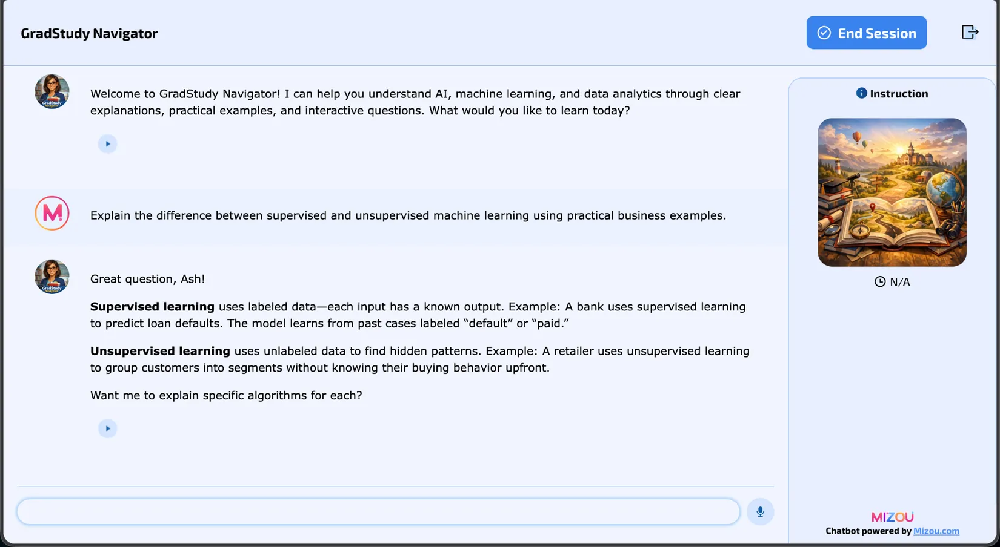

Introduction
Artificial intelligence has developed through periods of discovery, setbacks, and renewed investment. This timeline follows major developments from early ideas about machine intelligence to modern deep learning and generative AI.
I'm Aashirwad Shrestha , a software engineer expanding into AI and machine learning. I connect practical engineering with a curiosity for how intelligent systems are built, scaled, and applied.
My work spans backend and frontend development, and my graduate studies in AI and data analytics are helping me connect software systems with machine learning.
I am a software engineer with experience working across backend and frontend technologies, including Java, Python, Spring Boot, React, and SQL. I am pursuing graduate study in AI and data analytics to deepen my understanding of machine learning and explore how intelligent systems can be applied to real-world problems.
My professional interests connect reliable software engineering with data-driven problem-solving. As I develop my AI/ML knowledge, I want to understand not only what a model can do but also the infrastructure, limitations, and responsible choices that influence whether it is useful in practice.
I bring a software engineering foundation in Java, Python, Spring Boot, React, and SQL to teams building practical, data-informed solutions. By combining application development skills with graduate-level study in AI and machine learning, I aim to help organizations connect emerging AI capabilities with dependable software systems and real business needs.
From Turing's foundational ideas through AI winters, neural networks, cloud infrastructure, and the rise of generative AI. Browse the original 10-slide research presentation.
Tip: click a thumbnail, use the arrow buttons, or press ← / → when the slideshow is focused. Swipe on mobile.
Artificial intelligence has developed through periods of discovery, setbacks, and renewed investment. This timeline follows major developments from early ideas about machine intelligence to modern deep learning and generative AI.
The ten-slide presentation covers foundational research, two AI winters, expert systems, backpropagation, GPU-driven deep learning, cloud infrastructure, influential AI models and companies, and examples of industry impact. It includes a visual chronology and a references slide.
To explain the historical development of AI and machine learning, identify why progress accelerated or slowed, and communicate technical milestones in a format useful to technical recruiters, engineering teams, and professionals exploring AI adoption.
I organized the topic chronologically, identified key research and industry milestones, compared the causes of the two AI winters, and connected algorithmic advances with changes in computing power, available data, and cloud infrastructure. I used a visual timeline and supporting slides to make the material easier to scan, with sources collected in the presentation.
Microsoft PowerPoint (presentation and timeline); published research articles and historical sources (research and references); Claude (Anthropic), disclosed in the original slides as assistance with research and drafting. The final presentation is supplied as a downloadable PPTX.
This artifact demonstrates my ability to synthesize technical history, distinguish major shifts in AI approaches, and communicate complex topics visually. It connects my software engineering background with my developing AI/ML knowledge.
For software engineering and AI/ML recruiters, the timeline shows research literacy, technical communication, and an understanding that useful AI systems depend on more than algorithms alone. For engineering teams, it offers a concise reference for discussing why advances in hardware, data, and infrastructure matter when evaluating AI technologies.
This is a historical learning artifact, not a claim that I developed the AI systems described. The original presentation focuses on historical milestones through 2022, with references to subsequent developments.
An AI study assistant built with Mizou to explain machine learning concepts through practical examples, follow-up questions, and quizzes.
For my second artifact, I designed and tested a graduate-level learning chatbot. The full AI Lab also explored LLM comparisons, STORM research, and iterative prompting.
Mizou may require sign-in; the report includes screenshots of the prototype.

I followed design thinking to identify learner needs, choose a concept-and-practice tutor, and configure its instructions in Mizou.
Using Mizou, generative AI tools, and eight recorded tests, I checked explanations, quizzes, ethics, and applied scenarios.
The project demonstrates prompt design, evaluation, and responsible AI. Testing revealed opportunities to improve numerical assumptions, quiz feedback, and fraud-detection metrics.
The improvements above were identified during testing, not implemented and retested. The full report includes screenshots, test results, references, and limitations.
Full citations are provided on slide 10 of the original presentation.